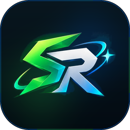
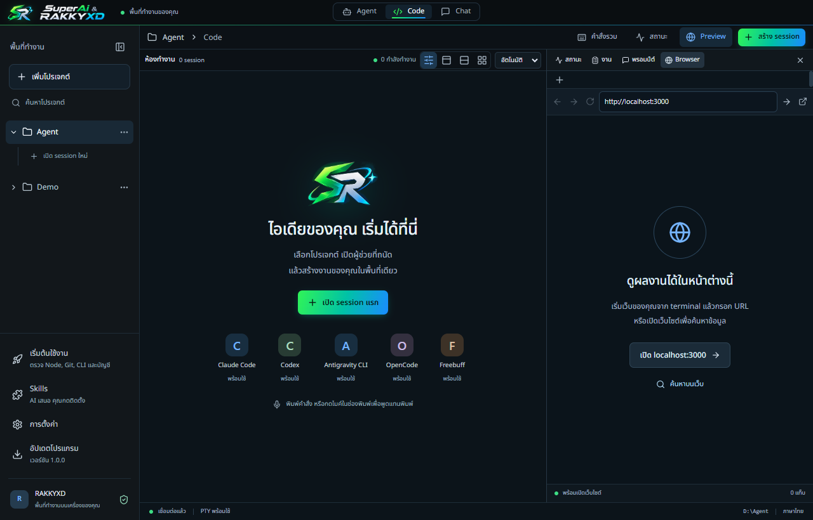

AI ทุกตัวของคุณ ในหน้าต่างเดียว
Claude · ChatGPT (Codex) · Antigravity · OpenCode · Freebuff
Windows และ macOS · ภาษาไทย · ใช้บัญชี AI ของคุณเอง
ไม่อยากติดตั้ง? ใช้ไฟล์ ZIP แบบ portable:
Windows ·
Mac Apple Silicon ·
Mac Intel
ทุกเวอร์ชันและสิ่งที่เปลี่ยน

ถ้าขึ้น “Windows protected your PC” ให้กด More info แล้ว Run anyway
ถ้าเปิดครั้งแรกไม่ได้ ไปที่ System Settings → Privacy & Security แล้วกด Open Anyway
หน้า เริ่มต้นใช้งาน จะติดตั้ง Node.js, Git และ CLI ของ AI ให้ทีละขั้น แล้วให้คุณเข้าสู่ระบบด้วยบัญชีของตัวเอง ไม่ต้องเตรียมอะไรมาก่อน
ไม่รู้ว่า Mac เป็นชิปอะไร? กดโลโก้ Apple มุมซ้ายบนของจอ → About This Mac ถ้าเห็น “Chip: Apple M…” ให้เลือก Apple Silicon ถ้าเห็น “Processor: Intel” ให้เลือก Intel